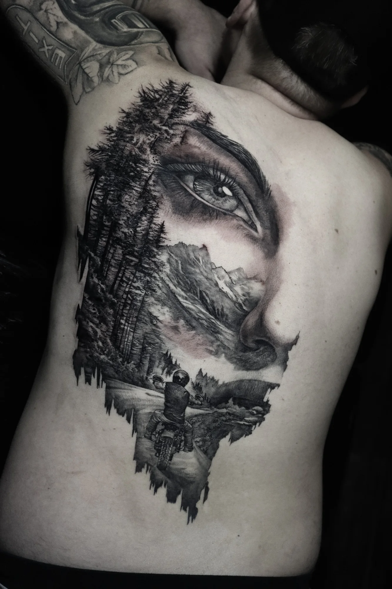
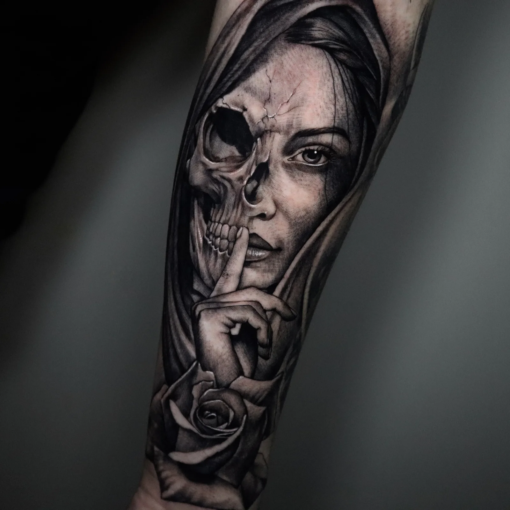
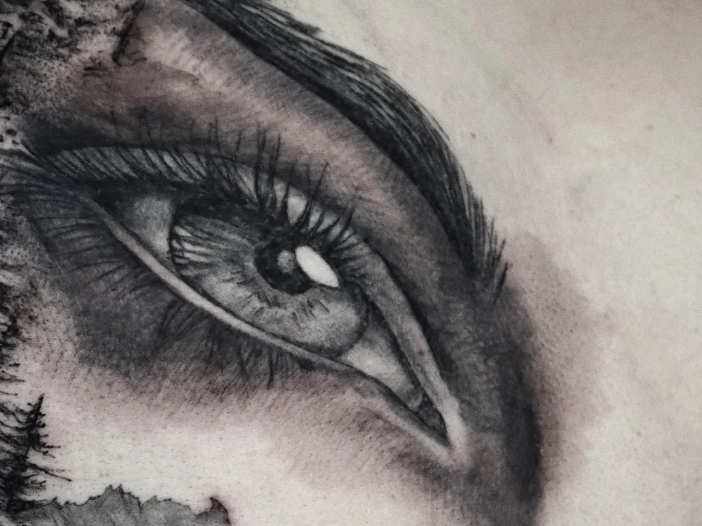
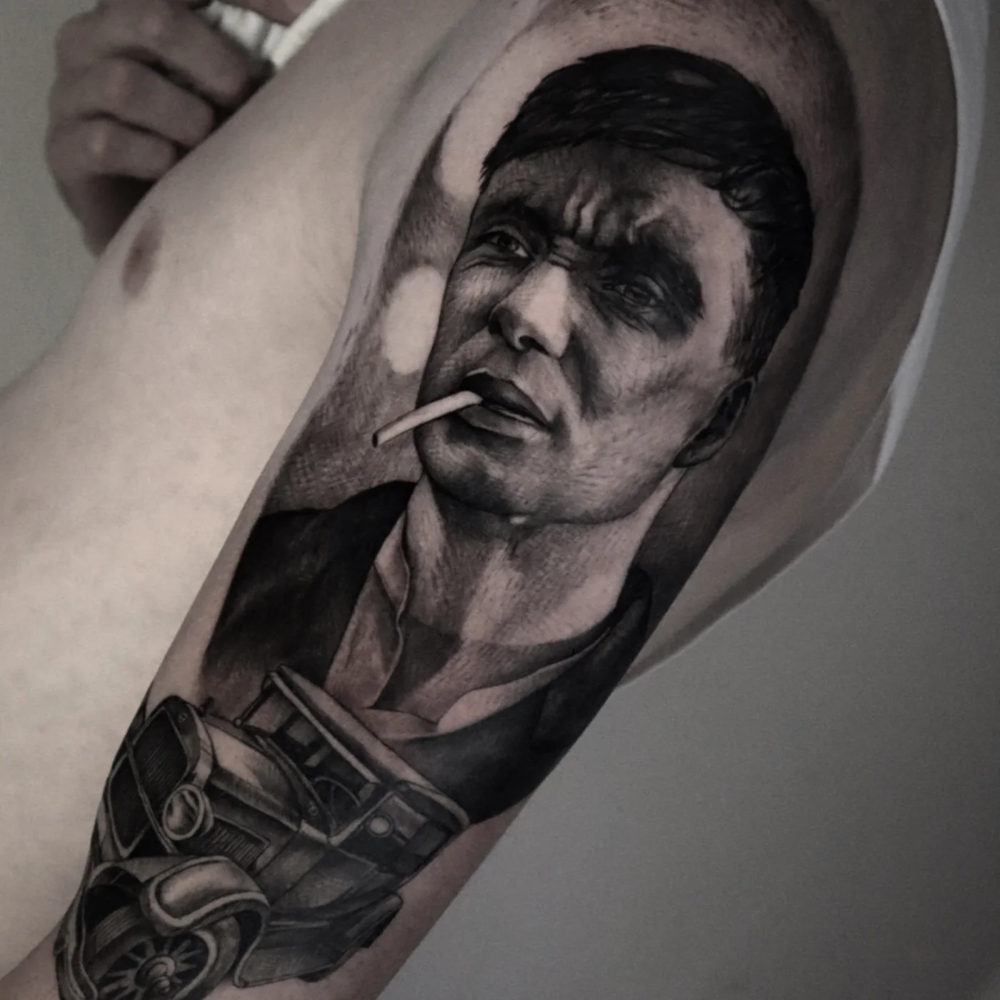

Nº 01 Black & grey realisme
Zwart, grijsen tot inde wimper.
Portretten, schedels en landschappen die over je rug lopen. Getekend en gezet door Timon, in een oude schuur vol kunst aan de Holstraat in Waregem.

Eerst getekend,
dan gezet.
Elk stuk begint als tekening. Zachte overgangen in grijs, diepe zwarten en kleine details die je pas ziet als je dichterbij komt.



Op het Google-profiel van de studio staan meer dan honderd foto's van zijn werk. Kijk gerust rond voor je langskomt.
Alle foto's bekijken →Van idee
tot huid.
Geen haast en geen standaardplaatje. Je stuk wordt gemaakt voor jouw lijf, op jouw tempo.
Je idee
Breng foto's, een verhaal of gewoon een gevoel mee. Samen kijken we naar plaats en grootte.
Het ontwerp
Timon tekent het stuk uit tot het klopt, zodat je weet wat er komt voor de naald draait.
De sessie
Rustig zetten, ook als het een paar uur duurt. Een babbel mag, stil zijn ook.
Gemiddelde uit 37 Google-reviews.
- IHet ontwerp klopt meteen
Klanten schrijven dat Timon snapt wat ze willen en zijn tekening tot in de puntjes onder controle heeft.
- IIDrie uur, één onderarm
Een klant kwam binnen, babbelde wat, en ging drie uur later buiten met een onderarm die er staat.
- IIIPraten of zwijgen, allebei goed
Geen ongemakkelijke stiltes, zeggen ze, maar je hoeft ook niet de hele tijd te praten.
Samengevat uit de reviews op Google. Lees ze allemaal
Kom eens binnen.
Holstraat 19
8790 Waregem
- Dinsdag tot zaterdag12u tot 18u
- Zondag en maandagGesloten
Een idee in je hoofd?
Kom langs tijdens de openingsuren en vertel wat je wil. Dan bekijken we samen hoe het op papier en op je huid komt.